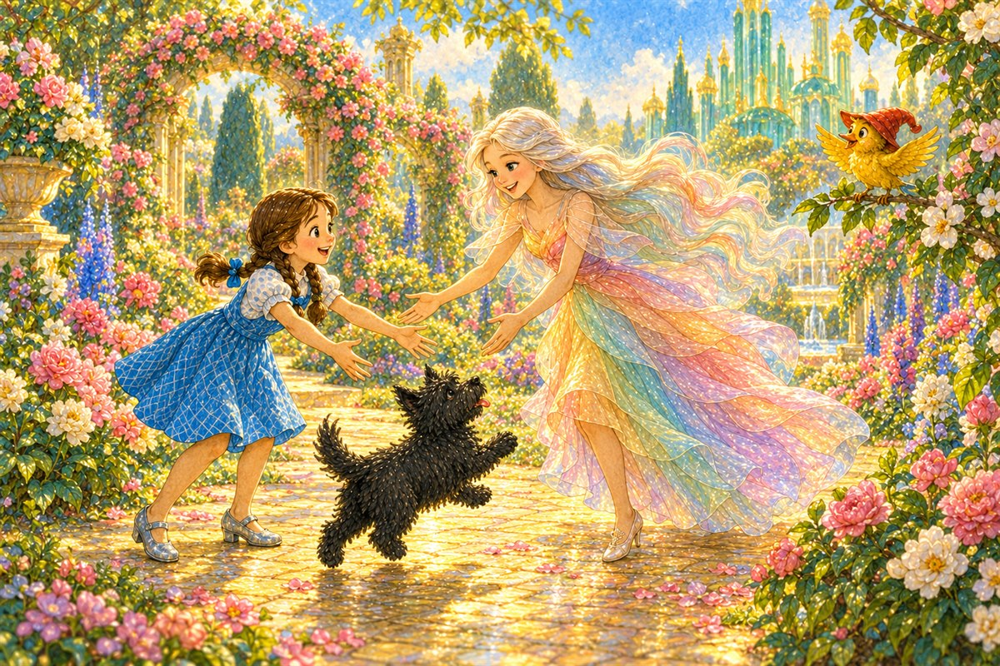
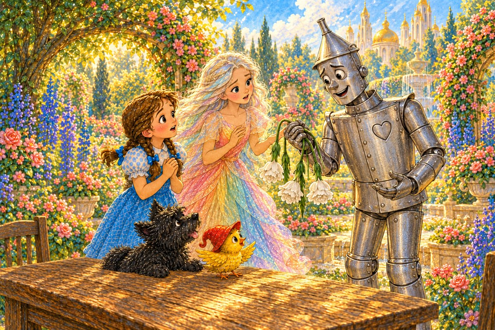
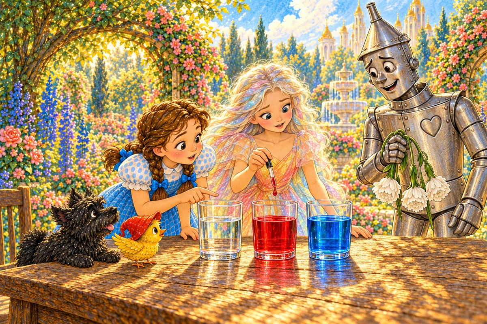
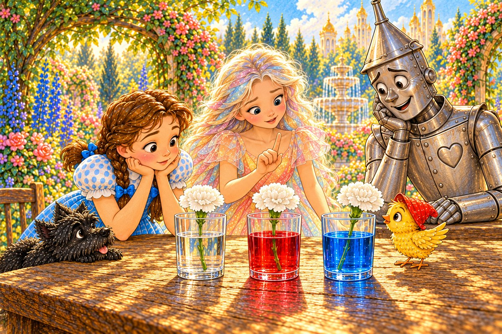
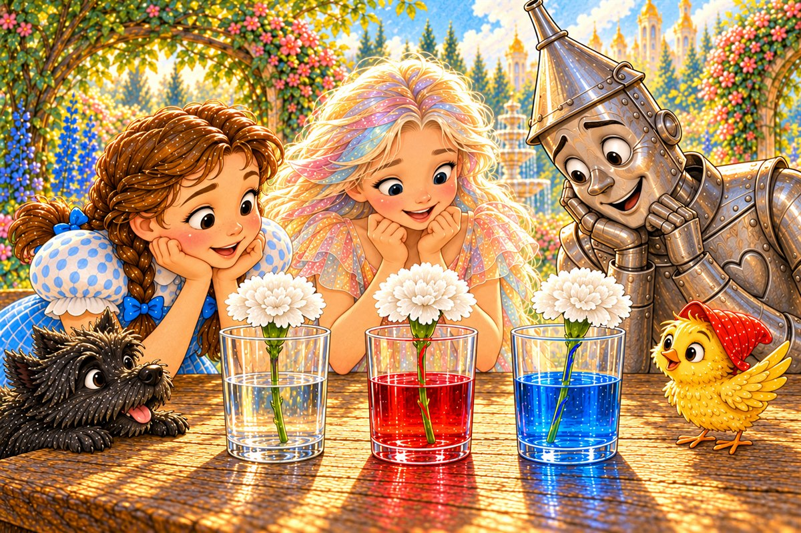
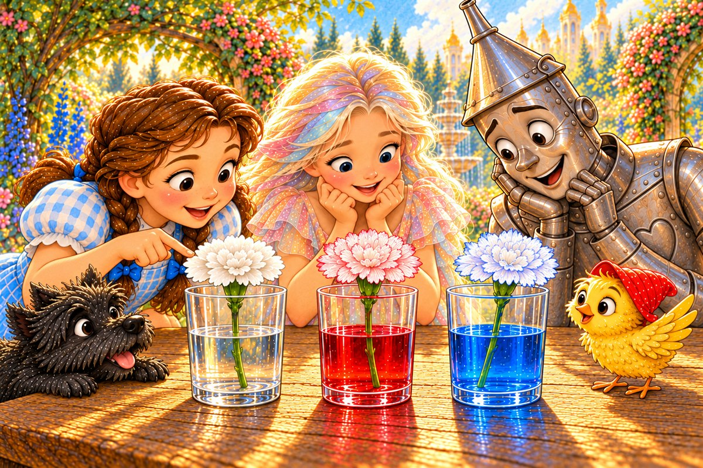
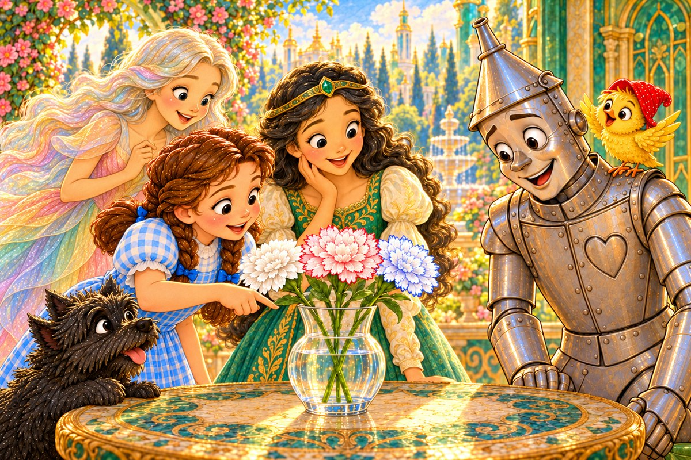

Pahina 1
Isang umaga, narinig ni Dorothy ang awit ng munting ibong dilaw.
Kasama nitong bumalik si Polychrome.
Tumakbo si Toto papunta sa kanila.
Isang bagong tuklas sa Lupain ng Oz
Basahin ang tatlong bagong pahina bawat araw. Bago magpatuloy, balikan muna ang mga pahinang nabasa na.

Isang umaga, narinig ni Dorothy ang awit ng munting ibong dilaw.
Kasama nitong bumalik si Polychrome.
Tumakbo si Toto papunta sa kanila.

Dumating si Tin Woodman.
May dala siyang tatlong puting bulaklak para kay Ozma.
Nakayuko ang mga bulaklak at malambot ang mga tangkay.
“Kailangan nila ng tubig,” sabi ni Tin Woodman.
“Pero saan pumupunta ang tubig?”
“Kulayan natin ang tubig para makita ang daan nito,” sabi ni Polychrome.

Pantay ang tubig sa tatlong malinaw na baso.
Walang kulay ang una.
Nilagyan ni Polychrome ng pula ang ikalawa at asul ang ikatlo.
Naglagay si Tin Woodman ng isang puting bulaklak sa bawat baso.
Tiningnan ng ibon ang mga talulot.
“Aakyat kaya ang kulay?” tanong ni Dorothy.

Makalipas ang ilang minuto, puti pa rin ang lahat ng talulot.
“Hindi pa,” sabi ni Polychrome.
“Kailangan nating maghintay.”

Bumalik sila nang hapon.
Mas kaunti na ang tubig.
May pulang guhit at asul na guhit sa dalawang tangkay.

Naging mapula ang gilid ng ikalawang bulaklak at bughaw ang gilid ng ikatlo.
Nanatiling puti ang unang bulaklak.
Lumipad ang ibon sa ibabaw ng mga baso.
Hindi ipininta ang mga talulot.
Mula sa tubig ang kulay.
Itinaas ni Tin Woodman ang bulaklak.
Nakita ni Dorothy ang maliliit na guhit sa talulot.
“Umaakyat ang tubig sa maliliit na tubo ng tangkay,” paliwanag ni Polychrome.
Dinala nila ang tatlong bulaklak kay Ozma.
Ipinakita ni Dorothy ang malinaw, pula, at asul na tubig at ang mga talulot.

“Sa tangkay umakyat ang tubig,” sabi ni Dorothy.
Umawit ang ibon sa balikat ni Tin Woodman.
Nanatili si Polychrome kasama ng mga kaibigan.
Pag-usapan natin